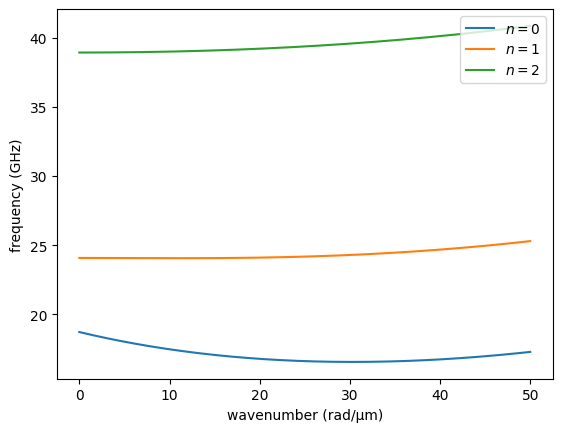
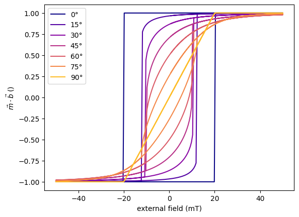

Static magnetization equilibrium and hysteresis loops#
In this example, we show how to use our MacrospinEquilibrium class to calculate static direction of magnetization in simple systems. The output can then be used in SingleLayerNumeric (other classes don’t work for partially OOP magnetization, yet). Eventually, it can also be used to calculate hysteresis loops or field-swept ferromagnetic resonance frequencies in films with some uniaxial anisotropies (### make an example on the FMR sweep and reference it here).
Note: It is based on a single macrospin model, so do not expect it to be super exact for thick films, waveguides, etc.
Basic usage and application to SingleLayer#
We start with importing the needed modules and simple system definition. By default, the class assumes a thin film in the laboratory frame of coordinates, i.e. x,y are in-plane (IP) of the film, z out-of-plane (OOP) (later we will also assume that spin waves propagate along x). We will now use the saturation magnetization of NiFe and apply magnetic field 40° from film normal.
[1]:
# import modules
import numpy as np # for vectorization
import matplotlib.pyplot as plt # for plotting
import SpinWaveToolkit as SWT
[ ]:
# initiate the class
maceq = SWT.MacrospinEquilibrium(
Ms=SWT.NiFe.Ms, # saturation magnetization of built-in NiFe
Bext=0.5, # (T) external field
theta_H=np.deg2rad(40), # (rad) polar angle of external field
phi_H=np.deg2rad(1e-4), # (rad) azimuthal angle of external field
# Without specifying `theta` and `phi`, the initial state of magnetization
# will be in the direction of the field.
)
You could notice the small angle of phi_H. This is because the model can get stuck, so slight “kick” around the exact value may help you reach the better results.
Now, to get the equilibrium angle we just use the maceq.minimize() method. The output is then stored in the maceq.M attribute as a dictionary.
[ ]:
maceq.minimize()
print(*[f"{key} = {maceq.M[key]:.3f} rad = {np.rad2deg(maceq.M[key]):.2f}°,"
for key in maceq.M.keys()])
Minimum successfully found.
theta = 1.281 rad = 73.40°, phi = 0.000 rad = 0.00°,
You see, that the interplay between the demagnetization field and external field resulted in the static magnetization direction of about 73.4°. This can be now used for dispersion relation calculations. To do this, we will now just use the maceq object and built-in NiFe parameters.
[4]:
k = np.linspace(1, 50e6, 200)
sl = SWT.SingleLayer(material=SWT.NiFe, d=50e-9, kxi=k, **maceq.M, **maceq.Bext)
for i in range(3):
plt.plot(k*1e-6, sl.GetDispersion(i)/(2e9*np.pi), "-", label=f"$n=${i}")
plt.xlabel("wavenumber (rad/µm)")
plt.ylabel("frequency (GHz)")
plt.legend(loc="upper right")
plt.show()

Calculation of effective field#
It’s also possible to calculate the effective field \(\mu_0H_{\mathrm{eff}}\) (here denoted as Heff). To do this, use the maceq.getHeff() method.
[5]:
Heff_data = maceq.getHeff()
print("theta = {:.3f} rad, phi = {:.3f} rad, Heff = {:.3f} T".format(*Heff_data))
theta = 1.281 rad, phi = 0.000 rad, Heff = 0.335 T
The resulting direction angles of Heff are the same as for M, which complies with the condition of equilibrium (effective field parallel to static magnetization). However, this method can be called at any time, even before the system is minimized. For example, by setting the magnetization angles to some non-equilibrium value, one can explore the direction and magnitude of the effective field.
Adding anisotropy#
It is quite common to encounter magnetic systems with anisotropic behaviour. Here, we currently implement only uniaxial anisotropy, which can be set in any direction in the laboratory frame using the theta and phi angles. You can add as many anisotropies as you like, but one or two is usually enough. It is done by calling the add_uniaxial_anisotropy() method with Ku > 0 for easy-axis and Ku < 0 for easy plane. However, sometimes it is more useful to define the anisotropy
using the anisotropy field Bani. In this case the Ku input is ignored in favor of the Bani parameter, which is recalculated to Ku internally.
[6]:
maceq.add_uniaxial_anisotropy(
name="anisotropy0", # name to be used in the dictionary of anisotropies
Ku=0, # (J/m^3) uniaxial anisotropy stength, here unused because we use Bani
theta=np.pi/2, # (rad) polar angle of anisotropy axis, here IP
phi=0, # (rad) azimuthal angle of anisotropy axis
Bani=20e-3, # (T) anisotropy field µ_0*H_ani
)
Now, you can either update the parameters of this anisotropy if you use the same name in this method or add another anisotropy with different name. All anisotropies are saved as a dictionary under the maceq.anis attribute with names being the dict keys. Each value is then another dictionary consisting of the set values of Ku, theta, phi, and a corresponding anisotropy tensor in the lab frame Na.
[7]:
maceq.anis["anisotropy0"]
[7]:
{'Ku': 8000.0,
'theta': 1.5707963267948966,
'phi': 0,
'Na': array([[-1.98943679e-02, -0.00000000e+00, -1.21817870e-18],
[-0.00000000e+00, -0.00000000e+00, -0.00000000e+00],
[-1.21817870e-18, -0.00000000e+00, -7.45919322e-35]])}
The tensor is currently used for the energy evaluations and is calculated only when the method add_uniaxial_anisotropy() is called. Therefore to change the parameters, e.g. the theta angle, it is recommended to use rather the add_uniaxial_anisotropy() method instead of dictionary assignment.
We chose the representation in the form of the tensor, since it can be used like this in the dispersion calculations with the SingleLayer class by supplying the tensor as the Na parameter.
Hysteresis loops#
With this macrospin model, we can also simulate hysteresis loops, similarly to e.g. the Stoner-Wohlfarth model.
So far we have created the system as a thin film with IP uniaxial anisotropy. To get the hysteresis loops, we will sweep the values of maceq.Bext dictionary and calculate a new equilibrium at each field value, while the starting value of magnetization direction will be the one calculated at the previous field point. We can either code this ourselves or use the built-in method hysteresis() of the MacrospinEquilibrium class.
We will illustrate this also while sweeping the IP angle of external field, changing from the easy-axis direction to the hard-axis direction.
[ ]:
nb, na = 200, 7 # number of field points and IP angle points
bexts = np.linspace(-0.05, 0.05, nb) # field range vector
# now we use the range vector to create the full loop (0->max->min->max)
bexts = np.concatenate((bexts[nb//2+1:], -bexts, bexts))
nb = len(bexts) # ...and update the number of field points
btheta = np.deg2rad(90)+1e-5 # (rad) fixed value of field's theta
bphis_deg = np.linspace(0, 90, na)+1e-3 # (deg) sweep vector of IP angle
bphis = np.deg2rad(bphis_deg) # same in radians
# We also need unit vectors of field to convert the magnetization components
# to projections in the field direction.
bs = SWT.sphr2cart(btheta, bphis)
thetas, phis = np.zeros((na, nb)), np.zeros((na, nb)) # preallocate
for i in range(na): # calculate loops at each `bphis`
thetas[i], phis[i] = maceq.hysteresis(
bexts, btheta, bphis[i],
# The default "Nelder-Mead" method usually works best, but it can be
# changed manually through the `scipy_kwargs` dirtionary.
scipy_kwargs={"method": "L-BFGS-B"},
)
ms = SWT.sphr2cart(thetas, phis) # [mx, my, mz] unit magnetization components
cmap = plt.get_cmap("plasma")
for i in range(na):
plt.plot(bexts*1e3, np.dot(bs[:, i], ms[:, i]), c=cmap(i/na),
label=f"{bphis_deg[i]:.0f}°")
plt.xlabel("external field (mT)")
plt.ylabel(r"$\vec{m} \cdot \vec{b}$ ()")
plt.legend(loc="upper left")
plt.show()
100%|##########| 499/499 [00:02<00:00, 248.32it/s]
100%|##########| 499/499 [00:01<00:00, 304.11it/s]
100%|##########| 499/499 [00:01<00:00, 283.54it/s]
100%|##########| 499/499 [00:01<00:00, 293.03it/s]
100%|##########| 499/499 [00:01<00:00, 272.29it/s]
100%|##########| 499/499 [00:01<00:00, 258.39it/s]
100%|##########| 499/499 [00:01<00:00, 272.66it/s]

Ta da! Nice and easy.
Note that with the built-in method, we can sweep only external field parameters. To sweep something else, e.g. uniaxial anisotropy strength or direction, you need to code this yourself.